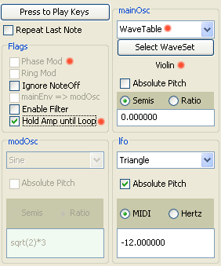

|
Mobileer Instrument Editor
CONFIDENTIAL and PROPRIETARY - © 2002-6 Mobileer Inc.
|
Making a WaveTable based Instrument
The ME2000 supports the use of WaveTables, which are digital recordings of instrument sounds. You can use a WaveTable to replace the mathematical oscillator used in the ME1000 instruments.
- You can either start by cloning an existing WaveTable instrument, or by converting a synthesis instrument to use WaveTables. You can identify the WaveTable instruments in the Orchestra editor because they have a size after the name, eg. "Violin, 30K".
- To make an instrument use WaveTables, select the "WaveTable" item in the main oscillator waveform menu. If the PhaseMod flag is set you must turn it off first.
- You will then be asked to select a WaveSet. A WaveSet contains one or more WaveTables that are mapped onto the keyboard.
- Note that when you have WaveTable selected then the modOsc and several other synthesis options are disabled.
- If you want to use the natural attack of the WaveTable then check the "Hold Amp until Loop" flag at the left edge of the editor. That will cause the ADSR envelope to be ignored until the WaveTable begins to loop.
- When you first play a WaveTable instrument, the WaveSet will have to be loaded to the target synthesizer. That may take a few seconds for a small WaveTable or a minute for a giant piano WaveSet. A progress dialog will appear when this happens.
| Top | Previous | Next |